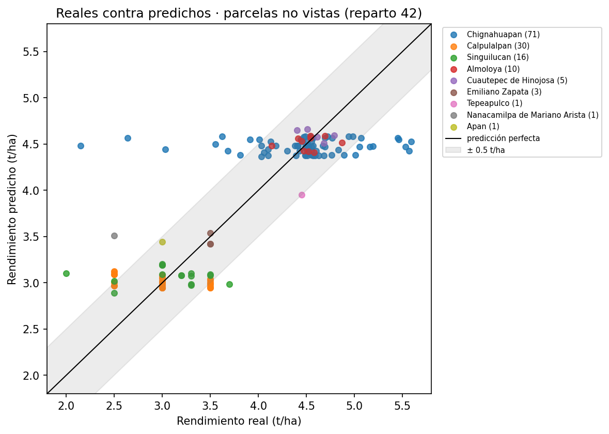
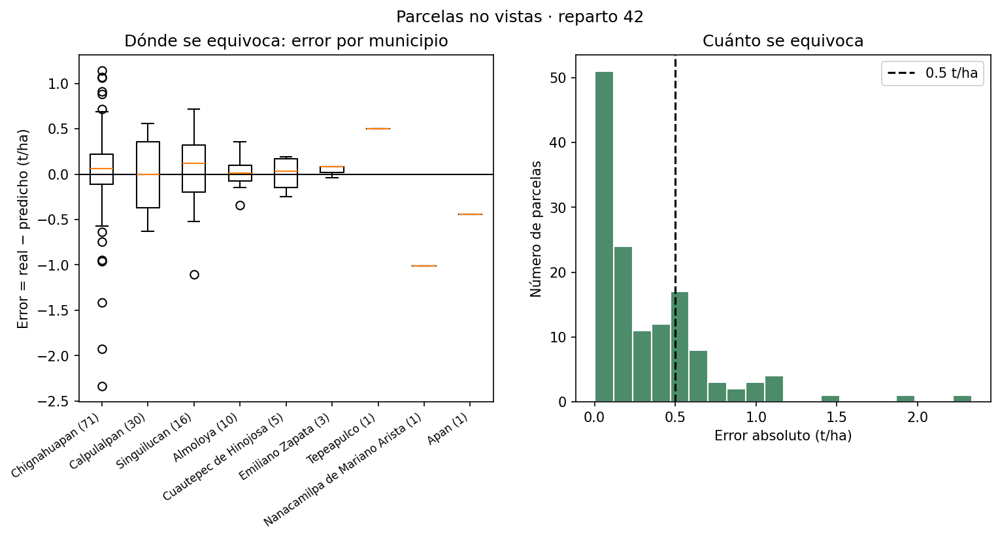
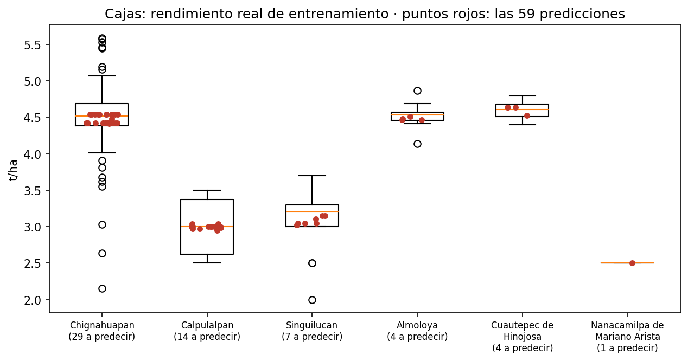
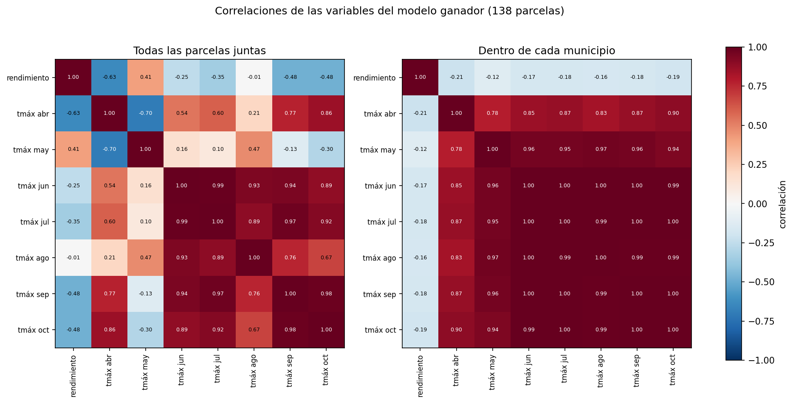

Visión Terra Data
Rendimiento de cebada en 197 parcelas de Hidalgo, Puebla y Tlaxcala
Reto AgroCebada FIRA 2026. Estimamos en toneladas por hectárea (t/ha) el rendimiento de grano de 59 parcelas en el ciclo de abril a octubre de 2025, con un modelo validado en las 138 parcelas cuyo rendimiento proporcionó FIRA (Fideicomisos Instituidos en Relación con la Agricultura).
El modelo en una frase
Cada estimación parte del rendimiento promedio de su municipio y lo corrige un poco según la temperatura máxima de abril a octubre de 2025 de la parcela, comparada con el promedio de las parcelas de entrenamiento de su municipio.
¿Qué quieres consultar?
AgroCebada 2026 · Equipo Visión Terra Data · Datos de las parcelas, rendimientos, clima, relieve e índices satelitales: FIRA (Fideicomisos Instituidos en Relación con la Agricultura). Documentos de la propuesta.
Las 59 predicciones
Rendimiento estimado de las 59 parcelas del conjunto de predicción, en toneladas por hectárea (t/ha), con cuatro decimales. Elige una parcela para ver cómo se forma su estimación.
| Promedio municipal |
|---|
Área en hectáreas (ha). Estimado = promedio municipal + corrección por temperatura máxima.
Promedio de las estimaciones por municipio
| Estado | Municipio | Parcelas estimadas | Media estimada (t/ha) | Parcelas de entrenamiento | Media observada (t/ha) |
|---|
Media estimada: promedio de los valores de cuatro decimales de la tabla de arriba. Media observada: promedio del rendimiento que proporcionó FIRA en las parcelas de entrenamiento del municipio; es el punto de partida de cada estimación.
Cómo funciona el modelo
Es un modelo sencillo: con una sola temporada de datos y 138 parcelas con rendimiento, fue el que menos se equivocó entre los 43 modelos que se probaron con las mismas pruebas.
En pocas palabras
- Punto de partida: el promedio de su municipio. Se toma el rendimiento promedio de las parcelas de entrenamiento del mismo municipio. Los municipios tienen rendimientos muy distintos entre sí, y esa diferencia es lo que más explica el rendimiento.
- Corrección por temperatura máxima. Se compara la temperatura máxima de cada mes, de abril a octubre de 2025, de la parcela contra el promedio de su municipio. Cada diferencia se multiplica por un coeficiente aprendido con una regresión ElasticNet.
- Se aplica la mitad de esa corrección. La estimación final es el promedio de dos modelos: el promedio municipal solo y el promedio municipal con la corrección completa. Eso equivale a sumar la mitad (½) de la corrección.
La fórmula
- ŷᵢ
- Rendimiento estimado de la parcela i, en t/ha (toneladas por hectárea).
- ȳₘ
- Rendimiento promedio de las parcelas de entrenamiento de su municipio m.
- xᵢ,ₖ
- Temperatura máxima promedio del mes k, de abril a octubre de 2025, en la parcela, en °C (grados Celsius).
- x̄ₘ,ₖ
- Promedio de esa temperatura en las parcelas de entrenamiento del municipio.
- βₖ
- Coeficiente del mes k, en t/ha por °C (tabla de abajo).
- ½
- Se suma la mitad de la corrección.
Referencia: elaboración propia del equipo (cuaderno, sección 12; informe, Metodología).
El peso de cada mes
Dentro de un mismo municipio la temperatura máxima cambia muy poco de una parcela a otra: su variación típica va …. Por eso el efecto real de cada mes es pequeño, aunque el coeficiente por grado se vea grande.
| Mes | Coeficiente β (t/ha por °C) | Variación típica dentro del municipio (°C) | Efecto de esa variación en la estimación (t/ha) |
|---|
Efecto: ½ × βₖ × sₖ, donde sₖ es la variación típica: la desviación estándar de las diferencias contra el promedio municipal, en las 138 parcelas de entrenamiento. Un coeficiente de 0 significa que ese mes no entra al modelo.
Las temperaturas de los siete meses suben y bajan casi juntas: dentro de cada municipio, su correlación entre meses va de 0.78 a 1.00. Por eso el signo de un mes aislado (como el positivo de mayo) no se lee solo: los meses se compensan entre sí y lo que cuenta es la suma.
Ejecuta el modelo
La página calcula aquí mismo el rendimiento de las 59 parcelas, con la fórmula y los parámetros del modelo ya entrenado. El entrenamiento completo se hace con el cuaderno en Google Colab (ver Código).
Paso a paso para una parcela
Elige una parcela. Puedes cambiar sus temperaturas para ver cómo responde el modelo; el botón "Volver a los valores reales" deshace los cambios.
Cómo se entrenó
El coeficiente de cada mes se aprendió con ElasticNet, una regresión lineal con penalización que deja en cero los meses que no aportan y reduce los demás. Primero, a cada parcela se le resta el promedio de su municipio, tanto al rendimiento como a la temperatura, y las diferencias de temperatura se estandarizan:
- rᵢ
- Rendimiento de la parcela menos el promedio de su municipio.
- zᵢ,ₖ
- Diferencia de temperatura del mes k contra su municipio, en desviaciones estándar.
- sₖ
- Desviación estándar de esas diferencias en las parcelas de entrenamiento.
- bₖ, βₖ
- Coeficiente del mes en la escala estandarizada y en t/ha por °C.
Referencia: elaboración propia del equipo (cuaderno, sección 6: funciones que centran por municipio y estandarizan).
ElasticNet busca los coeficientes que hacen más pequeño este total:
- n
- Número de parcelas de entrenamiento (138 en el ajuste final).
- α
- Fuerza de la penalización: mientras más grande, más pequeños quedan los coeficientes.
- ρ
- Mezcla entre las dos penalizaciones: valor absoluto (puede dejar meses en cero) y cuadrado (reparte el peso entre meses parecidos).
Se eligieron con validación interna en 5 partes, solo con las 138 parcelas, entre 3 mezclas (0.1, 0.5 y 0.9) y 40 valores de α: ….
Referencia: Zou y Hastie (2005), método ElasticNet. Referencia pendiente de la biblioteca scikit-learn, que usa esta forma con α y ρ.
Cómo se validó y se eligió
- Mismas pruebas para todos. Los 43 modelos se evaluaron con los mismos repartos. En cada reparto, las 138 parcelas se dividen en 5 partes: se entrena con 4 y se estima la quinta, hasta cubrirlas todas. Así cada parcela se estima sin haberse usado para entrenar.
- 20 repartos. Los repartos 42 a 51 sirven para comparar y elegir; los repartos 52 a 61, solo para confirmar.
- Regla fijada antes de correr. Gana el de menor RMSE (raíz del error cuadrático medio). Si varios empatan (la diferencia con el mejor es menor que lo que esa diferencia varía de un reparto a otro), gana el de menor MAE (error absoluto medio). Si en MAE también empatan, gana el de menor variación del RMSE entre repartos.
- Entrenamiento final. El modelo ganador se entrenó una última vez con las 138 parcelas y estimó las 59.
Cómo se mide el error
Se calculan en cada reparto con las 138 parcelas, cada una estimada sin haberse usado para entrenar, y se promedian los 10 repartos. yᵢ: rendimiento real; ŷᵢ: rendimiento estimado; ȳ: promedio del rendimiento real; n = 138.
Castiga más los errores grandes. Es el criterio principal para elegir el modelo.
Referencia pendiente Las Bases de FIRA piden esta métrica.
El error promedio en t/ha, sin dar más peso a los errores grandes.
Referencia pendiente Las Bases de FIRA piden esta métrica.
La parte de la variación del rendimiento que explica el modelo.
Referencia pendiente Las Bases de FIRA piden esta métrica.
Preguntas guía del reto
1. ¿Qué índice es más importante en la predicción?
Con nuestros datos, ningún índice de satélite mejoró la predicción por encima del promedio municipal. Por ejemplo, al corregir el promedio municipal con ElasticNet y las 22 variables candidatas, que incluyen derivadas del NDVI (índice de vegetación de diferencia normalizada) y del EVI (índice de vegetación mejorado) de Planet y de Sentinel-2, el RMSE fue de 0.51341 t/ha, contra 0.51260 del promedio municipal solo.
2. ¿Qué variable climática tiene mayor peso?
La temperatura máxima. Con la misma forma de modelo (promedio municipal + ½ corrección), la temperatura máxima mensual tuvo el menor error de validación: RMSE de 0.49479 t/ha, contra 0.49785 con temperatura máxima y mínima, 0.50393 con todo el clima mensual, 0.50650 con temperatura mínima y 0.51436 con lluvia. En el modelo, los meses con más peso son mayo, abril y octubre, pero como las temperaturas de los meses están muy relacionadas, conviene leerlo como un solo efecto de la temperatura de la temporada.
3. ¿Qué combinación de variables funciona mejor?
El promedio del rendimiento de cada municipio más la mitad de una corrección por la temperatura máxima de abril a octubre. Fue el de menor error entre los 43 modelos (RMSE de 0.49479 t/ha contra 0.51260 del promedio municipal) y tuvo menos error que el promedio municipal en los 10 repartos de comparación y en los 10 de confirmación. Agregarle la temperatura mínima, la lluvia, la topografía o índices de satélite no lo mejoró.
Limitaciones
- Hay una sola temporada (2025): el modelo describe ese ciclo y no se ha probado en otros años.
- El clima viene en celdas de unos 5 km (0.05°): en cada mes, las 197 parcelas comparten solo 53 valores distintos de temperatura máxima. Describe el contexto regional, no cada predio.
- La corrección por temperatura es pequeña (…): las estimaciones quedan cerca del promedio de su municipio y no reproducen los rendimientos extremos.
- Nanacamilpa de Mariano Arista tiene una sola parcela de entrenamiento, así que el punto de partida de su parcela a estimar es el rendimiento de esa única parcela (2.50 t/ha).
- El rendimiento no viene con el mismo detalle en todos los municipios: en Calpulalpan, las 30 parcelas de entrenamiento solo tienen tres valores distintos (2.5, 3.0 y 3.5 t/ha).
- Los coeficientes son asociaciones observadas, no efectos causales de la temperatura.
Resultados de la validación
Errores en parcelas que el modelo no vio al entrenar, en toneladas por hectárea (t/ha). Promedio de los repartos 42 a 51, con 5 partes por reparto.
De dónde viene la ventaja
El 70.41 % de la ventaja está en 3 parcelas. Medida como la baja en la suma de los errores al cuadrado (repartos 42 a 51), esa parte de la ventaja sobre el promedio municipal viene de las parcelas de Apan, Nanacamilpa de Mariano Arista y Tepeapulco, los municipios con una sola parcela de entrenamiento. Cuando esa parcela queda en la parte de prueba, su municipio se queda sin datos: la referencia usa el promedio general (alrededor de 3.95 t/ha) y el modelo corrige parte de ese error con la temperatura.
En el escenario ponderado como las 59, la mejora es de 0.99 %. Se mide el error solo en los municipios con 2 o más parcelas de entrenamiento, con el peso que cada uno tiene entre las 59; cubren 58 de las 59 (queda fuera Nanacamilpa). El RMSE baja de 0.4891 a 0.4842 t/ha, pero el MAE no mejora: pasa de 0.3239 a 0.3257.
Comparación de los modelos
RMSE de los modelos con menor error, hasta llegar al promedio municipal, que es la referencia. Pasa el cursor o el foco sobre una fila para ver sus cifras; la tabla completa de los 43 está abajo.
Ver la tabla de los 43 modelos
| Lugar | Modelo | RMSE | MAE | R² | Gana al promedio municipal (42–51) | RMSE confirmación (52–61) |
|---|
Fuente: comparacion_modelos_final.csv, de la corrida del cuaderno en Google Colab. Los modelos con la red LSTM (memoria de corto y largo plazo), Random Forest (bosques aleatorios), XGBoost (potenciación extrema del gradiente) o vecinos parecidos pueden dar cifras ligeramente distintas en otra computadora; el ganador y los primeros 14 lugares dan exactamente lo mismo.
Gráficas del modelo ganador



Correlación: qué es y cómo leerla
Qué es. La correlación mide si dos cosas suben y bajan juntas, por ejemplo la temperatura de una parcela y su rendimiento. Es un número entre −1 y 1.
Cómo leerla. Cerca de 1: cuando una sube, la otra también. Cerca de −1: cuando una sube, la otra baja. Cerca de 0: no se mueven juntas en línea recta. En la gráfica, el rojo es una correlación positiva y el azul una negativa; mientras más intenso el color, más fuerte la relación.
Cómo se calcula. Para cada parcela se mide cuánto se aleja su temperatura del promedio y cuánto se aleja su rendimiento del promedio, y se multiplican esas dos distancias. Se suman los productos de todas las parcelas y el total se divide entre un número que deja el resultado entre −1 y 1.
Todas juntas o dentro de cada municipio. Con todas las parcelas juntas, la correlación entre la temperatura máxima de abril y el rendimiento es de −0.633. Dentro de cada municipio, es decir, restando antes a cada parcela el promedio de su municipio, baja a −0.215: buena parte de la relación era de ubicación, porque hay municipios más cálidos que rinden menos. Dentro de cada municipio, los siete meses quedan negativos, de −0.124 a −0.215: las parcelas más cálidas que su municipio rindieron un poco menos.
Una correlación no prueba que una cosa cause la otra.
- xᵢ, yᵢ
- Temperatura máxima del mes y rendimiento de la parcela i.
- x̄, ȳ
- Sus promedios en las n = 138 parcelas de entrenamiento.
- Dentro
- Se usa xᵢ − x̄ₘ y yᵢ − ȳₘ: cada valor menos el promedio de su municipio m.
Referencia pendiente Cálculo: cuaderno, sección 13 (gráfica de correlaciones).

Código del modelo
Todo el proceso está en un solo cuaderno de Python: carga y revisión de los datos, variables, comparación de 43 modelos, selección automática del ganador, entrenamiento final y las 59 predicciones. La página no ejecuta el cuaderno: se ejecuta en Google Colab.
Huella md5 (algoritmo de resumen de mensajes 5) del cuaderno: …
Guía para ejecutarlo
- Descarga los dos archivos de datos de la sección Datos:
todo__basico_terminado.csveID_area_rendimiento_70_30_Reto_AgroCebada.csv. No los abras ni los guardes en Excel antes de usarlos. - Abre el cuaderno en Google Colab con el botón de arriba y elige "Entorno de ejecución" → "Ejecutar todo".
- Sube los dos archivos juntos cuando aparezca "Elegir archivos" (sección 2). El cuaderno revisa que sean los correctos.
- Espera a que termine. La comparación de los 43 modelos (sección 7) tardó 35.5 minutos en Colab; va escribiendo "Reparto N listo".
- Revisa la huella del resultado. Al final de la sección 12, la huella md5 del archivo de entrega debe ser aaac4544eef073e3c9be958b250f7ad1: así se comprueba que el resultado es idéntico al entregado.
- Descarga los resultados. La sección 13 descarga las gráficas, la tabla de modelos y los archivos de predicciones.
Qué hace cada sección
Abre una sección para ver su explicación y su código, tal como están en el cuaderno.
Cargando el cuaderno…
Datos para ejecutar el código
Para reproducir los resultados solo se necesitan el cuaderno y dos archivos: la tabla maestra y el archivo original de FIRA. Aquí está cada archivo, con lo que contiene, para qué sirve en el modelo y cómo se obtuvo.
Cargando la lista de archivos…
Los datos originales completos (capa de parcelas, rásteres de clima y relieve, y conjuntos de índices satelitales) los proporcionó FIRA a los equipos del reto; con ellos se armó la tabla maestra.
Documentos de la propuesta
Informe, anexos, bibliografía y video del equipo Visión Terra Data para el Reto AgroCebada FIRA 2026.
Equipo
Visión Terra Data
Los datos de las parcelas, los rendimientos, el clima, el relieve y los índices satelitales son de FIRA (Fideicomisos Instituidos en Relación con la Agricultura), Reto AgroCebada 2026. El rendimiento real de las 59 parcelas de predicción lo resguarda FIRA para la evaluación.